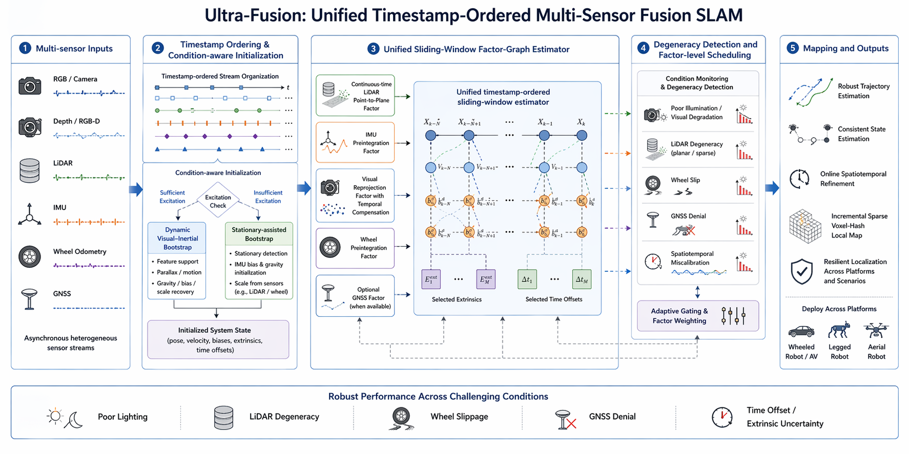

Overview of Ultra-Fusion. The framework unifies heterogeneous sensors in a timestamp-ordered estimator, supports deployment on ground, aerial, legged, and vehicle platforms, and improves localization robustness under sensor degradation, spatiotemporal uncertainty, and long-term or high-speed operation.
TL;DR
Ultra-Fusion is a resilient tightly-coupled multi-sensor fusion SLAM framework for intelligent transportation systems. A Unified Sliding-Window Estimator orders asynchronous measurements by timestamp and supports WIO, VIO, LIO, and LVIO with optional wheel and/or GNSS augmentation. Observability-Aware Initialization, Factor-Wise Reliability Scheduling, and Online Spatiotemporal Calibration improve robustness under sensor degradation and calibration perturbation.
Pipeline

Ultra-Fusion pipeline. Timestamp-ordered multi-modal measurements are fused in a unified sliding-window estimator with observability-aware initialization, factor-wise reliability scheduling, and online spatiotemporal calibration.